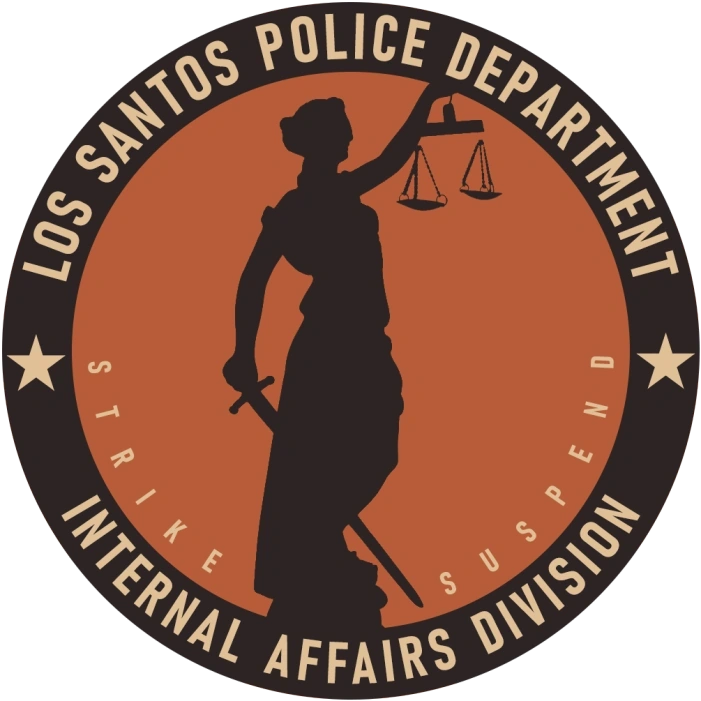
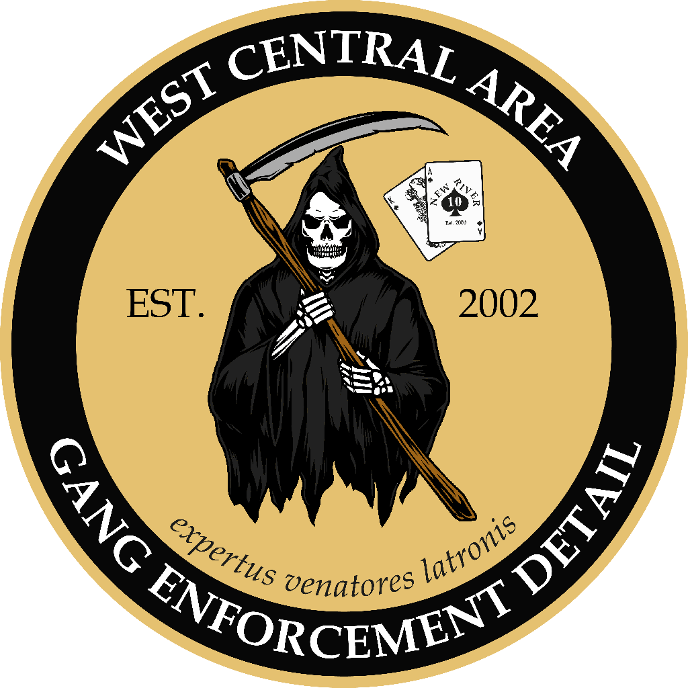
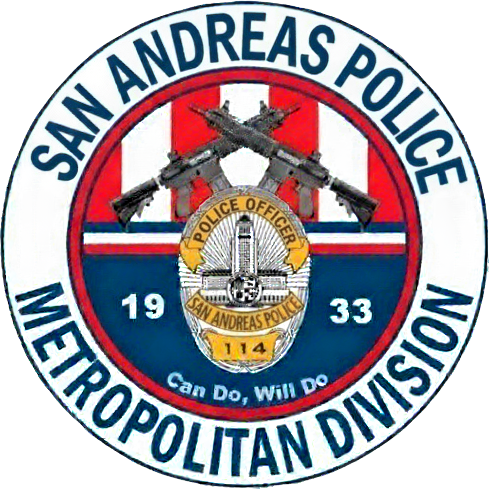

Integrity - Professionalism - Courage

Mengawasi integritas personil dan menangani investigasi internal terhadap pelanggaran kode etik di dalam departemen.
Bertanggung jawab atas proses seleksi personil baru, pelatihan akademi, dan manajemen karir seluruh anggota SAPD.
Unit investigasi khusus yang berfokus pada pengumpulan bukti hukum dan penuntutan jaringan organisasi kriminal besar.

Unit lapangan yang bertugas melakukan intervensi langsung, patroli area rawan geng, dan menekan aktivitas jalanan secara aktif.

Menyediakan dukungan taktis tingkat tinggi (SWAT) dan pengawasan udara menggunakan helikopter untuk pengejaran serta pencarian.